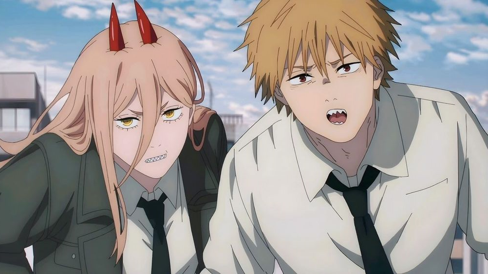
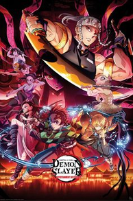
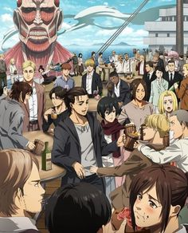
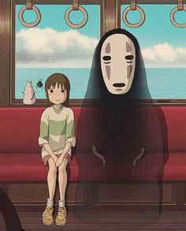
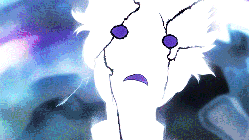

O que são Animes?
Anime é a versão animada das histórias originadas no Japão, geralmente adaptada de mangás, que são os quadrinhos japoneses. Enquanto o mangá é uma forma de narrativa visual impressa, o anime leva essas histórias para o formato audiovisual, com animação e dublagem. Muitas vezes, animes seguem fielmente os enredos dos mangás, mas podem incluir alterações para se adequar ao tempo de exibição ou expandir a trama. A relação entre mangá e anime é forte, com muitos sucessos em um formato sendo adaptados para o outro.
JOJO
Com o audiovisual um novo mundo se abriu para aqueles que amavam ler mangás, porque agora podiam ver o que estava acontecendo com animação, música e cores, tornando tudo mais dinâmico e emocionante.
Demon Slayer
Tanjiro Kamado, um jovem que se torna um caçador de demônios após sua família ser massacrada e sua irmã ser transformada em demônio. Ele busca uma cura para sua irmã enfrentando demônios poderosos e desafios perigosos ao longo do caminho. A série é conhecida por sua animação impressionante e cenas de ação emocionantes.
Attack on titan
conta a história de Eren Yeager e seus amigos, que vivem em um mundo onde a humanidade se esconde atrás de muralhas para se proteger dos titãs, gigantes devoradores de pessoas. Após um ataque devastador, eles se juntam ao exército para lutar contra essas criaturas.
A viagem de Chihiro
A Viagem de Chihiro conta sobre uma garota chamada Chihiro que entra em um mundo espiritual e precisa trabalhar em uma casa de banhos para salvar seus pais, que foram transformados em porcos. A história é uma jornada de coragem e autodescoberta em um universo mágico e visualmente deslumbrante.
Alguns gif's legais de cenas com carinho especial
Aqui eu gostaria de mostrar algumas cenas que me impactaram e que mostram o grande carinho dos animadores em fazer o que gostam, tanta dedicação para artes tão bonitas. Normalmente somente essas curtas cenas demoram semanas para serem feitas
Gear 5 do Luffy

Hinokami kagura

Mob atingindo 100%
